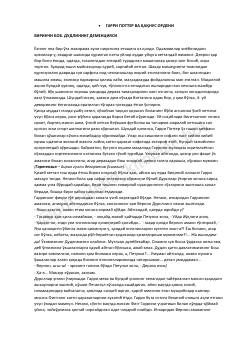

GPGarri Potter sehrgarlar dunyosini qutqarish uchun yashirin Qaqnus ordeni bilan birlashadi.
Garri Potter va Qaqnus ordeni - Garri Potter turkumidagi beshinchi kitob bo'lib, unda bosh qahramon sehrgarlar dunyosidagi xavfli o'zgarishlar va Lord Voldemortning qaytishi bilan bog'liq qiyinchiliklarga duch keladi. Garri va uning do'stlari sehrgarlar jamiyatini himoya qilish uchun yashirin tashkilot - Qaqnus ordeni safiga qo'shilishadi. Ushbu asar qahramonning o'smirlik davridagi ichki kurashlari va jasoratini yoritib beradi.